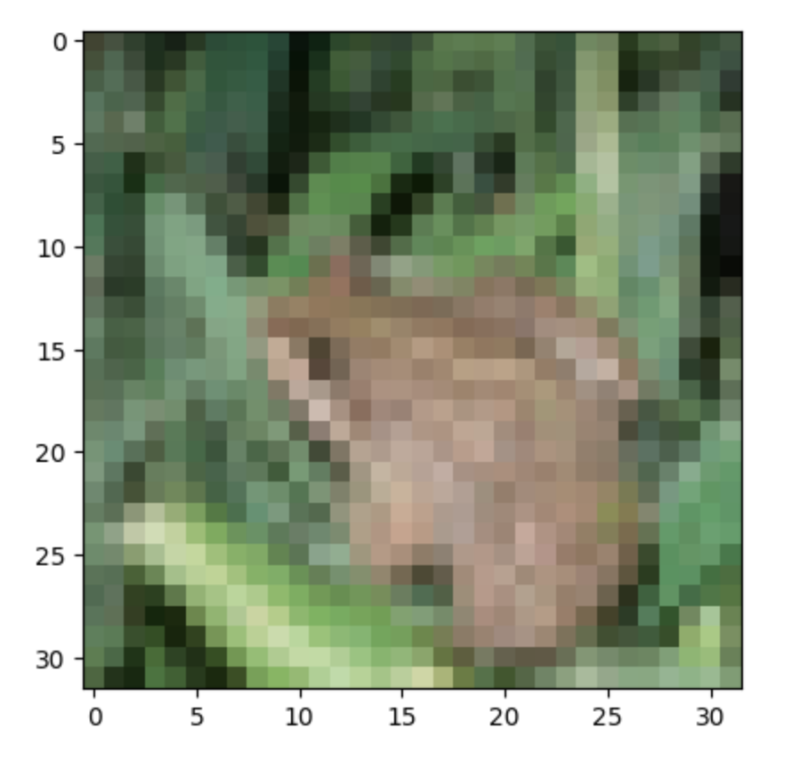

As part of my journey through a course on neural network optimization, I've delved into the fascinating world of image classification. In this post, I'm thrilled to present a detailed visual exploration of a model akin to VGGNet, using the CIFAR-10 dataset. This exploration not only illuminates the inner workings of neural networks but also sheds light on how these models perceive and process images.
The model I've used resembles the VGGNet-19 Layer architecture, with the primary adaptation being its accommodation for smaller 32x32 image inputs. Boasting 9.23 million parameters and 606 million Multiply-Accumulate Operations (MACs), this model is a powerhouse of computational ability. I employed a technique known as granular pruning, reducing the model's size by approximately half. Interestingly, this significant reduction in parameters had a minimal impact on the visualization of the activations. This outcome likely stems from the nature of granular pruning, where parameters close to zero are rounded down to zero, thereby preserving the model's essential characteristics while enhancing its efficiency.
The model's training ground is the CIFAR-10 dataset. This dataset is a cornerstone in the computer vision domain, featuring ten distinct classes: airplane, automobile, bird, cat, deer, dog, frog, horse, ship, and truck. Each class offers a unique challenge, making CIFAR-10 an excellent choice for testing the robustness and versatility of image classification models.
To bring these concepts to life, let's consider an example. The input image is that of a frog, sourced from the test set and thus, unseen by the network during training.

My approach to visualizing the network involved examining the activations post-Rectified Linear Unit (ReLU) function. In these visualizations, darker green indicates stronger positive activation. Early layers reveal activations that somewhat resemble a frog, demonstrating the network's focus on basic features. As we progress through the layers, these representations become more abstract, signifying the network's complex processing to discern intricate patterns. The final layer culminates in a classification decision, interestingly identifying the image as a frog with a high probability, but also considering the possibility of it being a deer.
This journey through the layers of a neural network not only provides an intriguing glimpse into the 'thought process' of AI but also highlights the intricate balance between simplicity and complexity within these models.